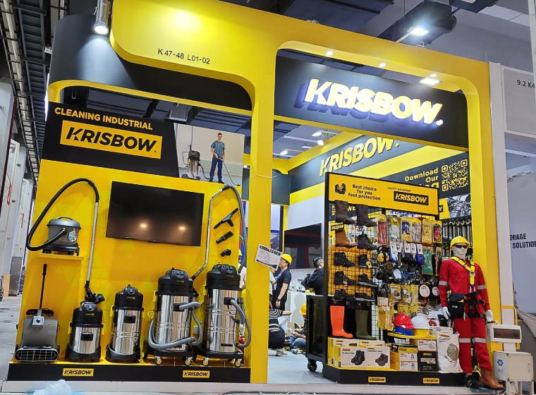

Pelajaran dari Krisbow
“Brand tidak harus selamanya dikenal dari produk pertamanya. Yang terpenting adalah memahami masalah apa yang sebenarnya ingin diselesaikan.”
Krisbow tidak berhenti di “perkakas.” Mereka memperluas definisinya menjadi “solusi untuk berbagai kebutuhan.”
